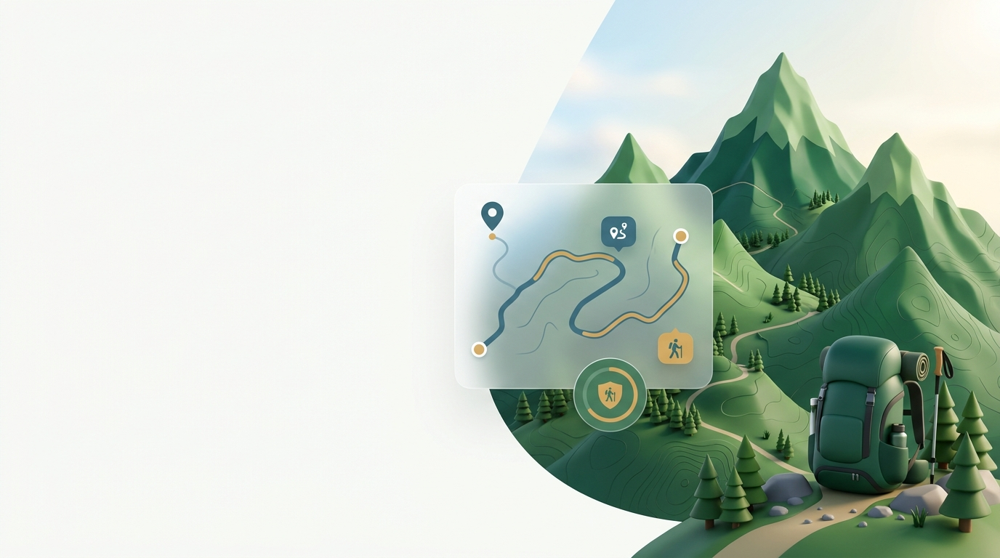

Зрозумілий вибір
Порівнюйте протяжність, час і рівень складності, щоб знайти відповідну стежку.
Ваша подорож починається тут
Знайдіть стежку до душі, продумайте похід і збережіть важливе перед виходом у гори.
Продуманий маршрут — більше часу для вражень

Для впевненої мандрівки
Від першої ідеї до зібраного наплічника — важливі кроки поруч.
Порівнюйте протяжність, час і рівень складності, щоб знайти відповідну стежку.
Тримайте план маршруту під рукою та перевіряйте умови перед виходом.
Плануйте спорядження заздалегідь, щоб ніщо важливе не лишилося вдома.
Натхнення для наступного походу
Оберіть напрямок і почніть планувати свою пригоду.
Показано 3 маршрути
Івано-Франківська область
Підйом до найвищої вершини України для тих, хто готовий до виклику.
Закарпатська область
Відкриті хребти, широкі краєвиди та простір для довгої прогулянки.
Закарпатська область
Лісовий шлях до озера для спокійного знайомства з Карпатами.
Параметри маршрутів наведено для навчального макета. Перед походом перевірте актуальний трек, прогноз і правила відвідування.
Три кроки до пригоди
Хороший маршрут починається з реалістичного плану. Оцініть свій досвід, погоду і доступний час.
Повернутися до маршрутівПро проєкт
«Зелені стежки Карпат» — навчальний вебпроєкт про свідоме планування мандрівок. Ми показуємо, як ясна інформація про маршрут і доступний інтерфейс допомагають зробити перший крок.
Подивіться перед виходом
Відео допомагає відчути рельєф і настрій мандрівки. Для планування використовуйте перевірені актуальні треки.
Відео з YouTube про похід Чорногірським хребтом.
Відкрити на YouTubeУмови перед походом
Поточні погодні дані для координат Говерли надходять із сервісу Open-Meteo. У горах умови швидко змінюються, тому перед виходом звірте прогноз і повідомлення рятувальників.
Джерело даних: Open-MeteoОрієнтир на мапі
Карта показує вершину як географічний орієнтир. Це не навігаційний трек: для походу потрібні актуальні маршрут, умови доступу й офлайн-мапа.
Відкрити в Google MapsНавчальна форма зворотного зв’язку
Спробуйте форму та перевірку полів. Це демонстрація: введені дані не надсилаються і не зберігаються.
Почніть із простого кроку
Порівняйте демонстраційні маршрути, а перед реальним походом перевірте актуальні джерела.
Обрати маршрут